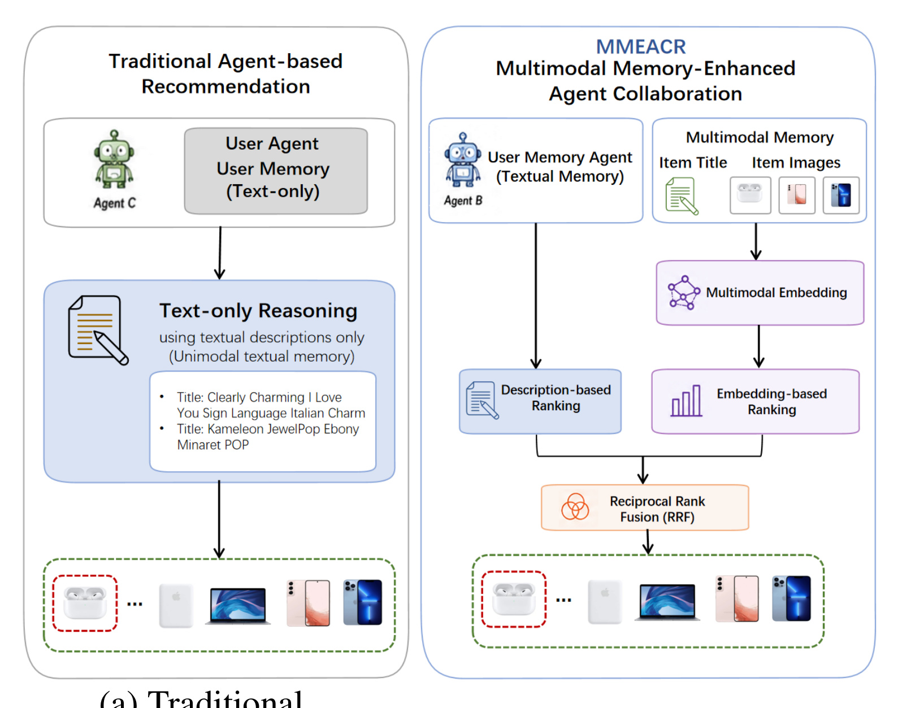
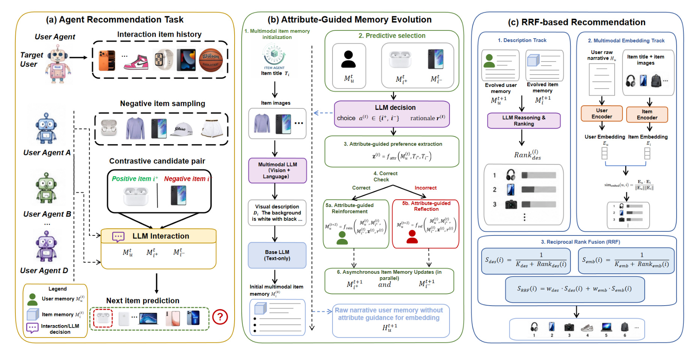
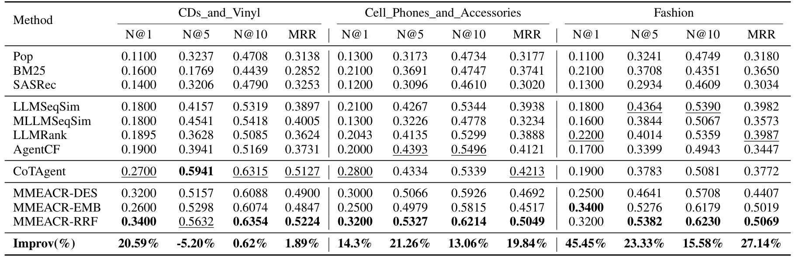
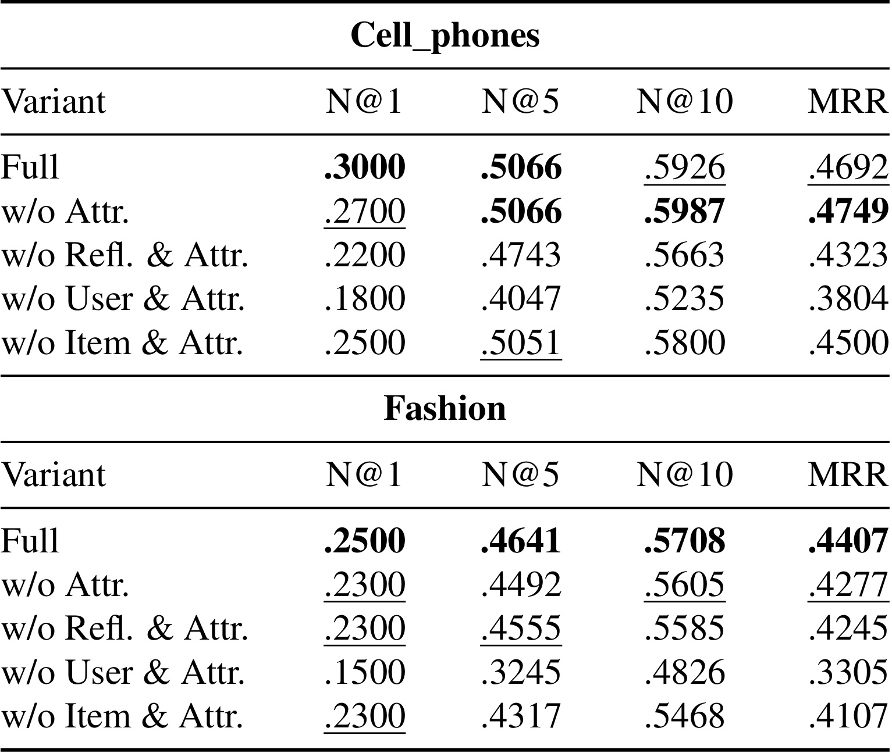
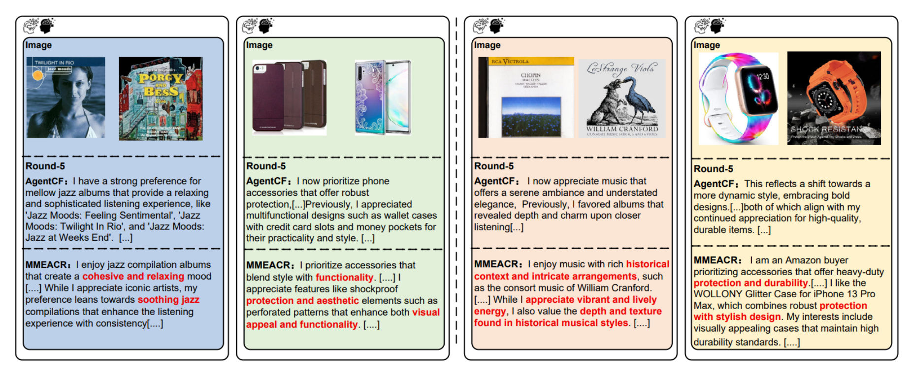
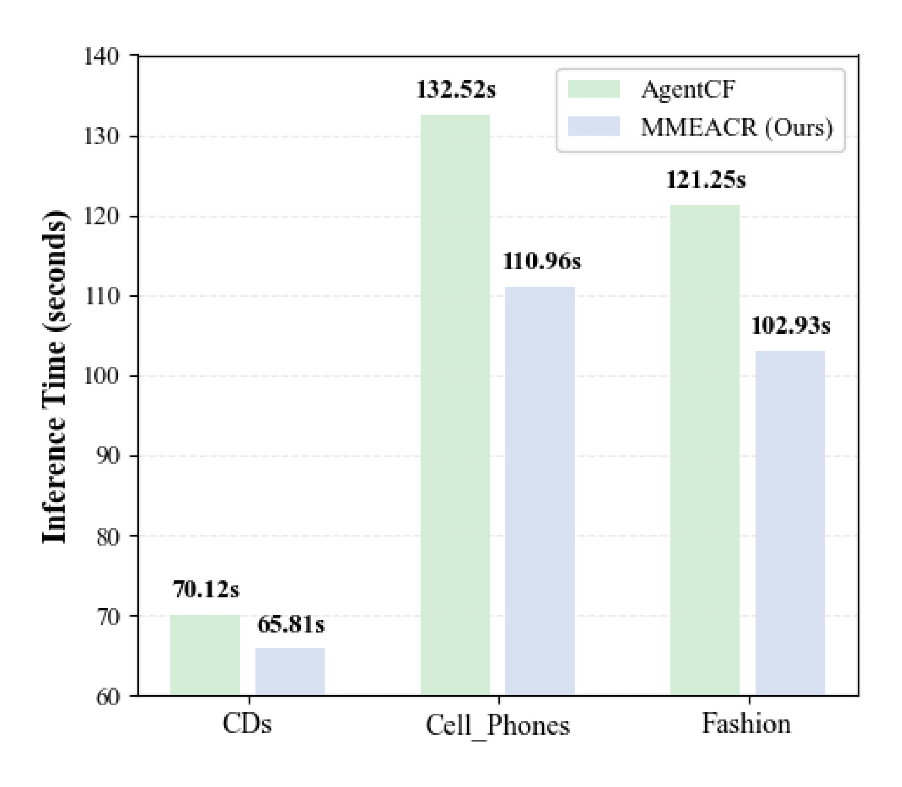
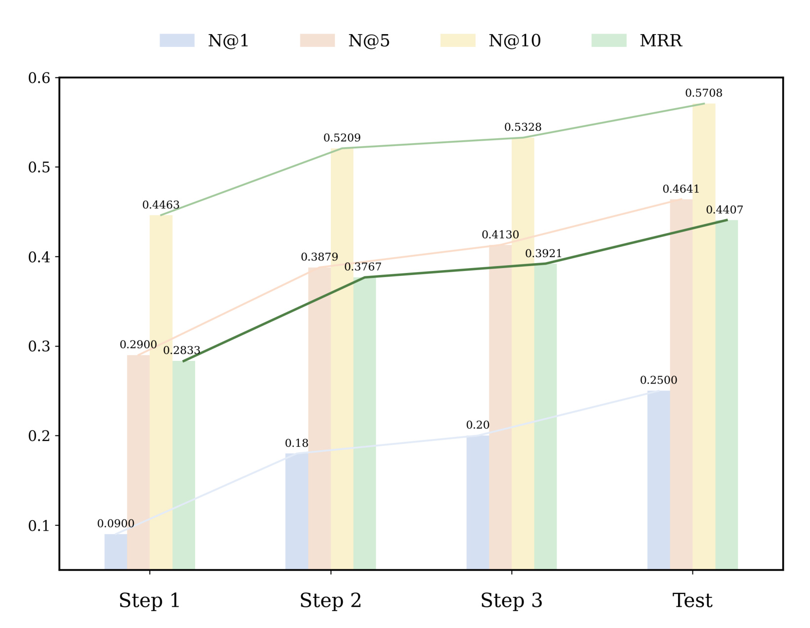

Seeing and Reflecting: Multimodal Memory-Enhanced Agent Collaboration for Recommendation
[toc]
论文链接：arXiv:2607.07108
作者：Hao Cong, Huizu Lin, Zihan Wang, Chengkai Huang, Quan Z. Sheng, Lina Yao
机构：Tsinghua University；合作机构包括 University of Science and Technology of China、Peking University、The University of New South Wales、Macquarie University 和 CSIRO Data61。
代码/项目页：arXiv 摘要页和 PDF 首页未核验到独立公开代码链接。
一句话概括：MMEACR 把 LLM agent 推荐从“只用文本记忆做可解释推理”推进到“同时看商品图像、维护可反思的用户/物品记忆、保留原始多模态嵌入信号，再用 RRF 融合两个排序轨道”，目标是在视觉证据强、偏好易漂移的推荐场景里兼顾准确性和可解释性。
基于 LLM 的 agentic recommender 虽然能用自然语言推理刻画用户偏好，但现有方法仍受限于文本中心输入和粗粒度记忆更新，容易遗漏视觉证据、引入语义噪声并在多轮交互中产生偏好漂移；MMEACR 要解决的正是如何让推荐 agent 同时“看见”多模态证据并“反思”哪些偏好应被强化或纠正。
1. 背景和问题
这篇论文站在 agentic recommender systems 的一个很具体的缺口上：LLM agent 已经可以把用户历史、候选物品和推荐理由写成自然语言记忆，并通过多轮交互逐步更新用户画像；但电商、音乐、服饰、电子产品这类推荐任务并不只有文本。商品图片里的材质、颜色、风格、外形、使用场景，经常比标题和评论更能解释用户为什么点中或拒绝某个候选。如果推荐 agent 的记忆主要来自文本历史，它可能把“喜欢轻松氛围的爵士专辑”“偏好重型防护但有美感的手机壳”这类视觉和语义混合偏好压缩成泛泛的关键词，后续再用这些粗粒度描述做匹配时就会越走越偏。
论文把已有 agent 推荐方法的主要问题概括为两类。第一类是输入模态不足：AgentCF 这类方法把用户和物品看成语言 agent，优点是推理过程可解释，缺点是物品视觉证据很难稳定进入长期记忆。即便图片被转写成描述，如果更新机制没有区分哪些属性真正驱动偏好，图像信息也可能被一次性概括后消失。第二类是记忆更新粗糙：agent 在预测正确或错误之后通常通过自由形式反思改写 profile，这种写法容易把偶然理由、冗余描述和错误归因写进长期记忆。多轮之后，用户画像不一定更精确，反而可能被噪声放大，出现 preference drift。

Figure 1 左侧展示传统文本中心 agent 推荐：用户 agent 主要维护文本记忆，依赖标题、类目和历史文本描述做推理；右侧展示 MMEACR 的变化：一条轨道仍然保留用户/物品 memory agent 的语言推理和可解释更新，另一条轨道则把 item image 与 interaction narrative 编成 multimodal embedding，最后用 Reciprocal Rank Fusion 融合两个排序。这个图的关键不是多加了一个视觉 encoder，而是把“可解释语言记忆”和“细粒度跨模态相似度”分开维护。前者回答为什么推荐，后者保留那些难以被简短 profile 完整表达的视觉细节。两者如果只保留一个，都会出现偏差：只有语言记忆会丢图像细节，只有 embedding 又缺少可读的偏好演化轨迹。
这个问题和推荐系统的长期用户建模直接相关。推荐链路里，用户兴趣不是静态标签，而是随互动不断修正的状态。LLM agent 的吸引力恰恰在于它可以把状态写成人能读懂的 profile，并在失败后解释为什么错了；但这也意味着记忆本身成了模型行为的一部分，写错、写泛、写重都会影响后续排序。MMEACR 的核心判断是：记忆更新不能只靠自由文本反思，而要有一个属性空间约束，让 agent 明确哪些属性被强化、哪些属性是误判来源。这样做的目标不是让 profile 更长，而是让 profile 的每次变化都围绕可比较、可复用的偏好因子。
论文还把这个问题放进多模态推荐的现实约束里看。许多视觉推荐任务中，用户并不会显式写出“我喜欢复古色调”“我讨厌太商务的外观”，但点击、购买、跳过和评论会反复暴露这些倾向。如果只把历史 item title 拼进 prompt，agent 容易把用户兴趣解释成宽泛类别；如果只做图文 embedding，又无法在用户层面形成可检查的长期偏好叙述。MMEACR 因此选择双轨：reasoning track 负责可解释记忆演化，matching track 负责保存原始跨模态细节。最终评价也围绕推荐排序展开，而不是围绕 agent 对话质量或摘要质量展开，所以它应归入推荐算法主线，而不是通用 agent 记忆论文。
2. 方法
2.1 多模态记忆初始化与双轨分工
MMEACR 的问题形式仍是候选集重排。给定用户集合、物品集合、按时间排序的用户历史，以及候选物品集合，模型输出个性化排序。论文先把推荐函数写成下面这个形式，后续所有 agent 记忆、视觉描述和融合排序都被约束在这个候选集内完成，而不是重新定义一个全库召回任务：
符号解释：(u) 是目标用户，(C) 是候选物品集合，(\hat C) 是 LLM 推荐框架输出的排序列表。这个式子看起来简单，但它提醒我们：MMEACR 不是做召回候选生成，而是在候选集合内利用记忆、视觉证据和 LLM 推理做排序。后续所有记忆更新、embedding 匹配和 RRF 都服务于这个排序函数。
在初始化阶段，每个物品 (i) 有文本标题 (T_i) 和最多 5 张图像 (V_i={v_{i,1},\ldots,v_{i,N_i}})。系统先用多模态 LLM 把标题和图像转成 image-grounded description，再用 LLM 生成初始 item memory：
符号解释：(D_i) 是从商品图片和标题生成的视觉落地描述，(M_i^{(0)}) 是第 0 轮物品语义记忆。用户记忆 (M_u^{(0)}) 则由领域模板初始化，例如音乐、电子产品或服饰的通用偏好描述。这里最重要的是 item memory 不再只来自标题和评论，而是从一开始就吸收视觉描述；同时系统还维护原始 narrative (H_u,H_i)，专门留给 embedding track 使用，避免结构化 memory update 过滤掉太多细节。

Figure 2 展示了 MMEACR 的完整数据流。左侧是推荐任务：用户与多个候选物品交互，正负样本在训练中被组成对比。中间的 reasoning track 让 User Memory Agent 和 Item Memory Agent 围绕当前 memory、候选对和反馈做选择、抽取属性、强化或反思；右侧的 matching track 则用 multimodal embedding memory 保存 title-image 与 raw history 的相似度信号。最后一栏是 RRF-based recommendation，把 description-based ranking 和 embedding-based ranking 合并。图中值得注意的是两个轨道不是串联关系：embedding track 不是 reasoning track 的后处理，reasoning track 也不是 embedding 的解释器；它们各自生成排序，再在 rank 层融合，这让细粒度视觉匹配不会被语言记忆的压缩误差完全吞掉。
2.2 属性引导的强化与反思
MMEACR 的核心更新发生在对比式交互中。每一步构造三元组 ((u,i^+,i^-))，其中 (i^+) 是真实偏好的正样本，(i^-) 是负样本。LLM interaction agent 根据当前用户记忆和两个物品记忆做选择并生成理由，系统再判断它是否选中了正样本：
符号解释：(a^{(t)}) 是第 (t) 步 LLM 选择的物品，(r^{(t)}) 是自然语言理由，(y^{(t)}) 表示选择是否正确。这个步骤相当于让 agent 暴露自己的偏好判断，然后用真实正负关系检查判断是否可靠。若只把 (r^{(t)}) 原样写入记忆，模型会把许多局部理由和偶然措辞也沉淀下来，所以论文引入了属性抽取。
属性空间 (A={a_1,\ldots,a_K}) 由高层偏好因子构成，例如 style、functionality、portability、visual appearance。抽取器根据用户记忆、两个候选标题、LLM 理由和属性空间生成结构化偏好信号：
符号解释：(z^{(t)}) 是属性级偏好信号，表示这次正负样本差异应归因到哪些可控属性。论文附录里的 prompt 模板强调了一个实现细节：属性抽取要限制在 allowed attribute dimensions 内，避免 LLM 自己发明偏好维度。这个限制很重要，因为长期 memory 的稳定性来自可复用属性，而不是每轮生成一组新说法。随后系统按预测是否正确进入两个分支：正确时强化，错误时反思，用户记忆更新写成：
符号解释：(x_u^{(t)}) 汇总了本轮更新所需上下文；(f_{rein}) 用于确认已有偏好，(f_{refl}) 用于修正误判导致的记忆偏差。这一步是 MMEACR 区别于普通 free-form reflection 的核心：反思不是让模型自由写一段“我错了”，而是让它围绕具体属性解释错在哪里，并把新的偏好/厌恶写回自我介绍式记忆。 用户侧更新之后，物品记忆也会异步更新，让正负物品都吸收本轮属性信号：
符号解释：(f_{pos}) 和 (f_{neg}) 分别更新正负物品的记忆，(H_u) 是原始用户 narrative，(\oplus) 表示按时间拼接。这里的设计保留了两种状态：(M_u,M_i) 是可读、被属性约束的语义状态；(H_u,H_i) 是较少过滤的原始历史。前者降低语义噪声，后者防止细节丢失。对线上系统来说，这相当于把“稳定画像”和“原始证据库”分开治理。
2.3 描述排序、嵌入排序与 RRF 融合
完成若干轮 memory evolution 后，reasoning track 用 evolved memory 做 description-based ranking。LLM ranker 比较用户记忆和候选物品记忆，输出描述排序；这一步保留了 agent 推荐最有价值的可解释性，因为排序依据仍然能追溯到可读的用户画像、物品画像和属性反思过程：
符号解释：(\pi_{des}) 是由语言记忆和 LLM 推理产生的候选排序。它的优势是可解释：如果某个物品被排到前面，系统可以回看用户 memory、item memory 和属性反思路径，解释推荐理由。但它的弱点也明显：一旦记忆压缩时省略了某些视觉细节，LLM ranker 就无法从空气中恢复。
matching track 用预训练 multimodal embedding model (MEM) 弥补这个问题。物品 embedding 是 title-image 表示的平均，用户 embedding 则由 raw interaction narrative 和历史偏好物品视觉内容构造，候选分数用余弦相似度计算：
符号解释：(e_i) 是物品图文 embedding，(e_u) 是用户 embedding，(P_u) 是用户历史偏好物品集合，(\bar v_i) 是代表性视觉内容，(s_{emb}) 是用户与候选物品的跨模态相似度。这个轨道不追求可解释 memory，而是保留标题、图片和原始历史中可能被 profile 总结遗漏的细节。对于视觉密集的 Fashion 域，这种设计尤其重要。
最后，MMEACR 不直接把两个分数线性相加，而是先转为 rank-based score，再用 weighted Reciprocal Rank Fusion 融合。这样做可以绕开 LLM 排序分数与 embedding 相似度分数不可比的问题，只在排序名次层面整合两类证据：
符号解释：(rank_{\pi_{des}}(i)) 和 (rank_{\pi_{emb}}(i)) 分别是候选在描述排序和嵌入排序中的位置；(k_{des},k_{emb}) 控制 rank contribution 的平滑程度；(w_{des},w_{emb}) 控制两条轨道权重。RRF 的好处是它不要求两个轨道的原始分数可比，也不要求 LLM 输出 calibrated score。它只相信“某个候选在一条轨道里排得靠前”这件事，再把两个排名证据合并。风险在于 RRF 权重和候选集合规模会影响最终排序，若线上候选来源、负采样难度或视觉 embedding 分布变化，论文中的权重效果未必直接迁移。
3. 实验结果
3.1 数据集、基线与主结果
论文在 Amazon review 的三个 text-intensive 子集上实验：CDs、Cell_Phones 和 Fashion。每个子集采样 100 个用户、约 500 次交互，稀疏度约 99.34% 到 99.36%。评估采用 leave-one-out：每个用户最后一次交互做测试，倒数第二次做验证；每个 evaluation case 包含 1 个正样本和 9 个同域随机负样本。指标是 NDCG@1、NDCG@5、NDCG@10 和 MRR。这个设置偏向重排能力而非大规模召回能力，因此读结果时要注意：论文证明的是候选集内排序质量，不是端到端全库检索。
基线覆盖传统和 LLM/agent 方法，包括 Pop、BM25、SASRec、LLMSeqSim、MLLMSeqSim、LLMRank、AgentCF 和 CoTAgent。MMEACR 自身报告了三种变体：MMEACR-DES 只用描述记忆排序，MMEACR-EMB 用 multimodal embedding similarity，MMEACR-RRF 融合两者。这样的对照比较合理，因为它能回答三个问题：语言记忆轨道是否有用，视觉 embedding 轨道是否有用，两个轨道是否互补。

Table 1 是主要证据。CDs 上，MMEACR-RRF 的 N@1 达到 0.3400，相对最强 baseline 提升 20.59%，MRR 为 0.5224，略高于 CoTAgent 的 0.5127；但 N@5 低于 CoTAgent，论文解释为 CDs 复杂度较低，显式 CoT 已经足够捕捉偏好。Cell_Phones 上，RRF 在四个指标上均强，N@1 为 0.3200，N@5 为 0.5327，N@10 为 0.6214，MRR 为 0.5049，其中 N@5 相对最强 baseline 提升 21.26%。Fashion 是最能体现视觉收益的域：MMEACR-EMB 的 N@1 已达 0.3400，RRF 在 N@5、N@10 和 MRR 上最高，分别为 0.5382、0.6230 和 0.5069；相对最强 baseline 的 N@1、N@5、MRR 提升分别达到 45.45%、23.33% 和 27.14%。这组结果支持论文的核心叙述：视觉证据越重要，embedding memory 和双轨融合的价值越明显。
但主结果也有几个边界。首先，每个用户的候选只有 10 个，其中 9 个是随机负样本，这比工业推荐里的 hard negative 和混排候选容易；如果负样本都和正样本高度相似，RRF 的增益可能变化。其次，LLMRank、AgentCF、CoTAgent 等基线的 prompt、模型和调用成本会影响结果，论文使用 GPT-4o-mini 或 GPT-4o 相关设置，复现实验需要严格对齐。第三，Table 1 中 DES、EMB、RRF 的胜负不是每列都一致，说明两个轨道互补，但也说明融合权重不是无条件支配所有指标；线上使用时仍要按业务目标调权。
3.2 消融：属性、反思、用户记忆和物品记忆
论文用 Table 3 对 Cell_Phones 和 Fashion 做消融。变体包括去掉属性引导、同时去掉反思和属性、去掉 user memory/attribute、去掉 item memory/attribute。这个消融直接对应方法章节里的关键问题：如果没有属性空间约束，记忆更新是否仍然可靠？如果没有 user 或 item 侧记忆，agent 协同是否只是形式？

Table 3 的总体趋势是：Full 模型在多数指标上最好或接近最好，去掉 User & Attr. 的损失尤其大。Cell_Phones 上，Full 的 N@1 为 0.3000，w/o User & Attr. 降到 0.1800，MRR 从 0.4692 降到 0.3804；Fashion 上，Full 的 N@1 为 0.2500，w/o User & Attr. 只有 0.1500，MRR 从 0.4407 降到 0.3305。这说明用户侧可演化记忆不是可有可无的解释文本，而是影响排序的状态变量。去掉 Item & Attr. 也会下降，但幅度通常小于去掉用户侧，符合推荐任务中用户偏好建模是主导因素的直觉。
更细地看，w/o Attr. 并不总是每列都比 Full 差，例如 Cell_Phones 的 N@10 和 MRR 在表中接近甚至略高。这提醒我们，属性引导并不是简单地让每个指标单调提升，它更多是在减少漂移、提升可解释性和视觉场景稳定性。论文将 w/o Refl. & Attr. 进一步作为去掉反思和属性的弱化版本，结果通常低于 Full，说明“正确则强化、错误则纠正”的分支确实有贡献。对于工程落地，这个消融的启发是：如果要简化系统，不能只删掉用户记忆更新；更可行的简化是先保留 user memory 和基础属性抽取，再评估 item memory 更新、反思 prompt 和 RRF 权重的成本收益。
3.3 记忆演化案例：为什么说它能减少偏好漂移
定量指标说明排序变好，但 LLM agent 推荐还必须解释“记忆到底怎么变”。论文用 Round-5 的案例比较 AgentCF 和 MMEACR 在四个语义域中的 profile。AgentCF 的记忆更容易停留在宽泛类别，例如泛泛地说用户喜欢 jazz、phone accessories；MMEACR 则能保留更具体的属性短语，例如 cohesive and relaxing mood、heavy-duty protection with stylish design、historical context。

Figure 3 的价值在于它把“属性引导反思”变成可观察文本。每个卡片里，上方是商品图像和交互轮次，下方比较 AgentCF 与 MMEACR 的记忆更新。MMEACR 高亮的红色短语不是凭空生成的情绪标签，而是和物品视觉/语义证据相连的属性归纳：音乐例子强调氛围，手机壳例子强调保护性与美感，文史类例子强调 historical context。这类属性短语比“喜欢某类别”更适合跨物品迁移，因为它能解释用户为什么可能喜欢另一个不同标题但相同风格的物品。与此同时，这张图也暴露一个复现难点：这些属性的质量高度依赖 MLLM 描述和 prompt 约束，如果视觉描述本身偏了，反思会把偏差写进长期记忆。因此它既是可解释性证据，也是对属性抽取质量的压力测试。
3.4 推理效率：多了记忆轨道但不一定更慢
agentic recommender 的常见疑问是成本。多代理、多轮反思、多模态描述看起来会增加推理时间。论文在附录说明了成本策略：训练和评估中使用分层模型策略，GPT-4o 参与 memory initialization、interaction simulation 和 inference-time ranking；推理时 DES 对 10 个候选做一次 LLM ranking，EMB 轨道则用向量相似度排序，DES 无效时可 fallback 到 EMB-only。主文 Figure 4 比较了 AgentCF 和 MMEACR 的推理时间。

Figure 4 显示 MMEACR 在三个数据集上都比 AgentCF 更快：CDs 从 70.12 秒降到 65.81 秒，Cell_Phones 从 132.52 秒降到 110.96 秒，Fashion 从 121.25 秒降到 102.93 秒，对应约 6.15%、16.27% 和 15.11% 的时间减少。这个结果并不意味着 MMEACR 绝对低成本，因为初始化、训练和记忆演化仍然需要 LLM/MLLM 调用；它说明的是在论文设置下，推理阶段通过更结构化的 memory 和更短 prompt，可以少走 AgentCF 那种冗长多轮交互。对工业系统来说，更应关注离线 memory evolution 成本、图片描述缓存、embedding 更新频率，以及 DES 失败时 EMB fallback 是否会牺牲解释性。
3.5 迭代记忆演化是否真的逐步改进
最后，论文在 Fashion 上观察优化步骤中的性能演化。Fashion 是视觉信息最关键的域，因此适合检验多轮 memory refinement 是否有效。Figure 5 汇报 Step 1、Step 2、Step 3 和 Test 阶段的 N@1、N@5、N@10、MRR。

Figure 5 中，N@10 从 Step 1 的 0.4463 提升到 Test 的 0.5708，MRR 从 0.2833 提升到 0.4407，N@5 也从约 0.29 上升到 0.4641。这个趋势支持论文的记忆演化主张：User Agent 与 Item Agent 的反复交互不是简单累积历史，而是在纠正和强化中让 profile 更可用。需要注意的是，图里 Step 1 到 Step 3 的变化来自实验优化流程，并不等价于线上每个用户使用越久就一定越好；线上会遇到兴趣周期变化、冷启动用户、商品库存变化和促销干扰。更严谨的后续实验应测试长期窗口、时间切分和 hard negatives，而不只是在同一抽样设置下观察优化步骤。
综合这些实验，MMEACR 的证据链比较完整：Table 1 给出主排序提升，Table 3 拆解组件贡献，Figure 3 展示可解释 memory 的质量差异，Figure 4 回应效率问题，Figure 5 验证迭代趋势。最强的证据来自 Fashion 和 Cell_Phones 这类属性/视觉较强的域；最弱的部分是数据规模较小、候选负样本较简单、没有公开代码核验，也没有线上 A/B 或更长时间跨度的用户漂移实验。因此它更像一个结构清晰的 LLM4Rec 研究原型，而不是已经证明可直接大规模部署的系统方案。
4. 总结
4.1 我的判断
MMEACR 最值得看的地方不是“推荐系统用了多模态”这个表层组合，而是它把 agent 推荐里的长期记忆拆成了两种状态：一种是人能读懂、受属性约束、可以强化和反思的语义记忆；另一种是保留原始图文细节、用于相似度匹配的 embedding memory。这个拆法比把所有历史塞进 prompt 更工程化，也比只做 embedding rerank 更可解释。对于内容理解、商品推荐、短视频封面偏好和视觉风格推荐，这种双轨结构有可迁移价值。
我会把这篇论文视为 LLM4Rec 中“可解释 agent 记忆 + 多模态匹配”的一个较完整基线。它不一定能替代传统召回/排序模型，但可以作为高价值小候选集合上的重排器，或者作为用户画像解释与偏好反思模块。尤其是在用户反馈稀疏但商品视觉属性强的场景，MMEACR 的属性抽取和反思机制能提供比黑盒 embedding 更可审计的画像变化记录。
4.2 工程启发与复现建议
如果要复现，第一步应先只做离线小规模候选重排：固定每个用户 10 到 50 个候选，缓存 item image description，构建 user memory 和 item memory，再比较 DES、EMB、RRF 三条线。第二步再加属性引导反思，重点观察 profile 是否减少重复泛化词，而不是一开始就追求全量多轮 agent 协作。第三步要独立评估视觉描述质量，因为 MLLM 生成的 (D_i) 是整条链路的入口；若图片描述偏离商品真实属性，后续属性抽取和反思都会被污染。
线上化时要把记忆治理当成状态系统，而不是 prompt 文本拼接。用户记忆需要版本、时间戳、来源交互、属性置信度和回滚机制；物品记忆需要与图片、标题、类目和库存状态同步；embedding memory 需要处理新商品、换图、下架和类目迁移。RRF 权重也不应静态照搬论文，应按业务指标、候选来源和视觉属性强弱分域学习。对于隐私和安全，用户画像中的自然语言偏好很容易包含敏感推断，必须限制可写属性范围，并保留用户可删除或可解释的更新记录。
4.3 局限与后续跟进
局限至少有四点。第一，实验规模小，每个域 100 个用户和 500 次交互更适合验证机制，不足以证明大规模稀疏推荐场景的稳定性。第二，候选集是 1 正 9 负的 leave-one-out 设置，负样本难度和工业候选池差距明显。第三，LLM/MLLM 调用成本和 prompt 质量对结果影响很大，论文未给出可公开复现实装代码链接，本轮也未核验到独立代码仓库。第四，长期 memory evolution 可能带来存储、检索和隐私成本，论文 limitation 也承认连续记忆演化在长周期用户上仍需优化 memory capacity 与 lifelong efficiency 的平衡。
后续我会跟三条线。第一，等作者是否释放代码、prompt 和属性空间定义，尤其是 allowed attribute dimensions 如何按不同域构建。第二，关注 hard negative 或全库检索版本的评测，因为真正能考验视觉偏好的不是随机负样本，而是同类、同价位、同品牌或相似封面的候选。第三，把它和 AgentCF++、CLEAR-Rec、MLLMSeqSim 这类 memory-enhanced 或 multimodal 推荐方法横向比较，看 MMEACR 的收益究竟来自属性反思、视觉 embedding，还是 RRF 在小候选集上的融合优势。整体上，这篇论文提供了一个可读、可拆、可审计的 agentic recommender 方案，但在工程落地前仍需要更大规模、更难候选和更严格隐私治理验证。